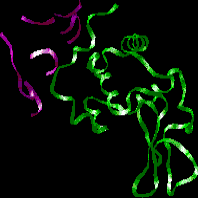

Antibody Structure Problem Set
Problem 3. Locations of antibody/antigen contacts
Tutorial to help answer the question
The hypervariable regions of the antibody:
A. are localized on opposite sides of the light and heavy chains. B. are localized on the same side of the light and heavy chains, and are concentrated in one area to maximize associations with a single amino acid of the antigen. C. are localized on one side of the light and heavy chains, but are spread out allowing association with antigen over a large surface area.
Tutorial
Amino acid residues of an antibody's hypervariable region (purple) directly interact with an antigen (green). This interaction is illustrated in a ball and stick diagram on the left, and as a ribbon diagram on the right.
 |
 |
The hypervariable regions are on the same side of the antibody's light and heavy chains to maximize contact with antigen.
The hypervariable regions are spread out, and can be discontinuous, permitting interaction over a broad area. Hydrogen bonds and van der Waals forces create a large number of weak bonds joining the antibody and antigen . Together these weak bonds make antibody/antigen binding very specific and strong.


The University of Arizona
Tuesday, June 20, 2000
Contact the Development Team
http://www.biology.arizona.edu
All contents copyright © 2000. All rights reserved.